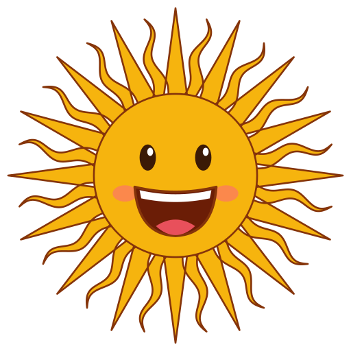
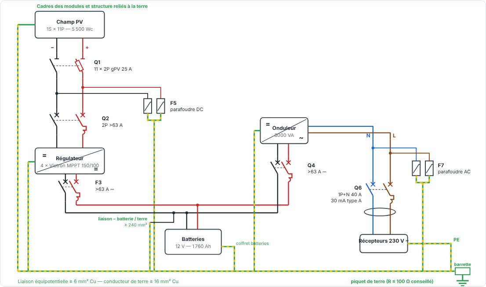
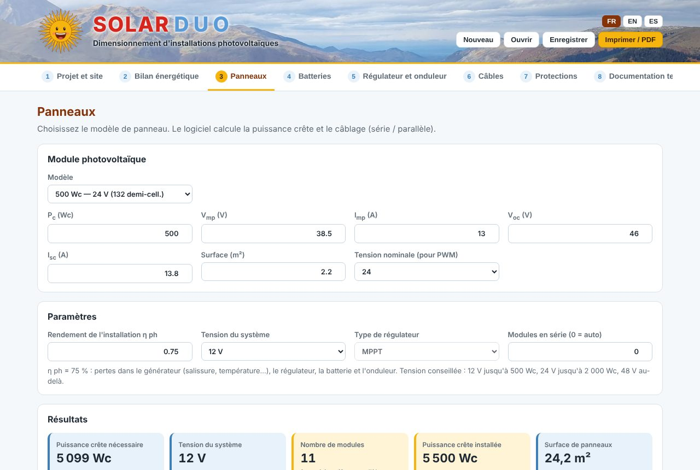
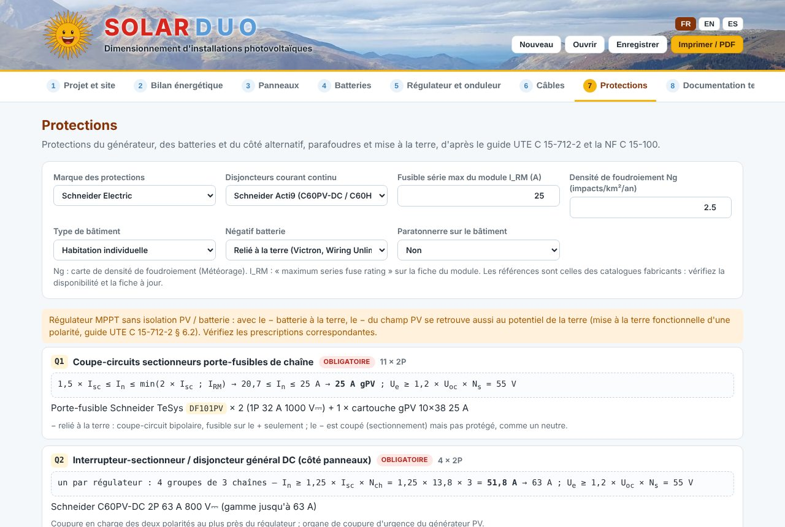
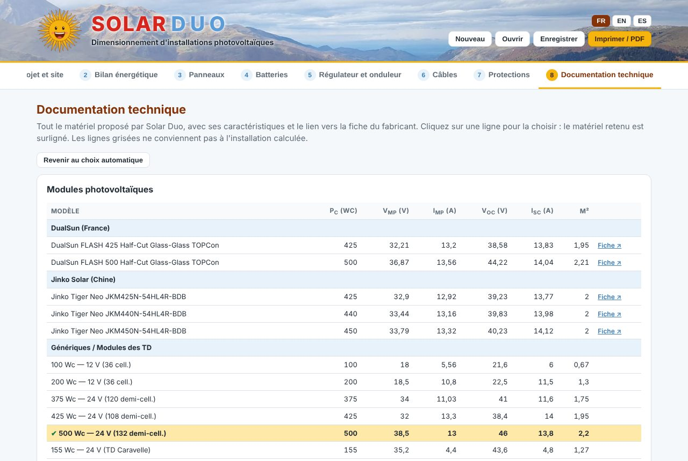
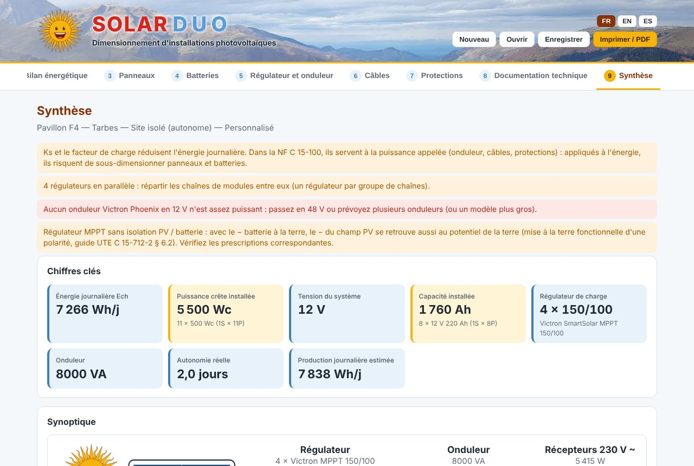
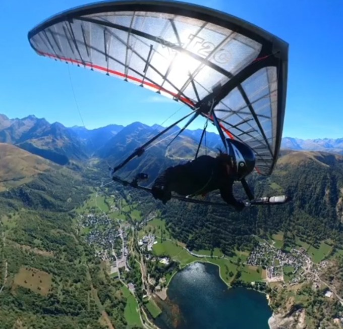

Dimensionner une installation photovoltaïque, en site isolé avec batteries ou raccordée au réseau : bilan énergétique, panneaux, batteries, régulateur, onduleur, câbles et protections, avec le schéma et la mise à la terre. Pensé pour la classe, gratuit pour tous.
Les onglets suivent la démarche du cours ; chaque résultat affiche sa formule avec les valeurs, pour que l'élève puisse refaire le calcul.
Appareils types, puissance et durée d'utilisation, veille, coefficients Ku et Ks avec leurs tableaux de référence.
DualSun (fabricant français) et Jinko Solar : puissance crête, modules en série et en parallèle, limite de 120 V en site isolé.
Plomb ou lithium : capacité, autonomie, profondeur de décharge, couplage série / parallèle et courant de court-circuit du parc.
Victron et Studer jusqu'à 5 kVA : tension du champ par grand froid, courant de charge, puissance appelée.
Sections normalisées et chutes de tension entre panneaux, régulateur, batteries et onduleur.
Coupe-circuits porte-fusibles, sectionnement, disjoncteurs courant continu, parafoudres, différentiel 30 mA type A : Legrand, Schneider, ABB.
Toutes les masses reliées à la terre, cadres des panneaux compris, visibles sur le schéma ; option « − batterie à la terre » selon Victron.
Tout le catalogue avec les liens vers les fiches des fabricants ; un clic pour choisir, le matériel retenu est surligné.
Récapitulatif, liste du matériel et schéma unifilaire, à imprimer ou à enregistrer en PDF ; projets enregistrés dans un fichier.
Le tour des onglets sur l'exemple du pavillon F4 à Tarbes, du bilan énergétique au schéma des protections.
Les calculs suivent les TD de bac pro électricité et les textes de référence : NF C 15-100, guide UTE C 15-712-2.
Pour chaque appareil, puissance × durée d'utilisation ; la veille est ajoutée.
Ne : heures équivalentes du mois le plus défavorable ; ηph = 0,75.
J : jours d'autonomie ; U : tension du parc ; D : profondeur de décharge.
Site isolé (UTE C 15-712-2) ; la tension doit aussi rester compatible avec le régulateur.
Une petite résidence en autonomie complète, d'après le TD du phare de la Caravelle.
Une maison entière en autonomie : électroménager, éclairage, multimédia.
Une ombrière de recharge de véhicules électriques en Martinique, qui produit et stocke son énergie.
L'exemple du pavillon F4 à Tarbes, du schéma des protections à la synthèse.





Gratuit, sans publicité, sans compte. Pas envie d'installer ? La version en ligne fonctionne dans le navigateur, même sur tablette.

La notice s'ouvre aussi depuis le logiciel : menu Aide › Notice. L'interface du logiciel est en français, en anglais et en espagnol.
Avec le code source :
src/solar-duo.html dans un navigateur, ou, avec Node.js : npm install puis npm start.Si le logiciel vous rend service, en classe ou pour un projet, un petit don aide à le faire évoluer : nouveau matériel, nouvelles langues, corrections.
Dons sur Ko-fi : montant libre, par carte bancaire ou PayPal, sans créer de compte.